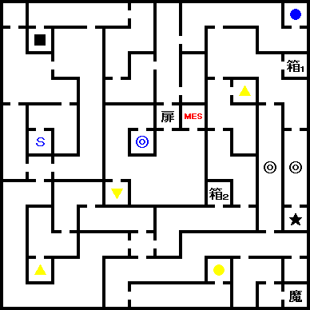
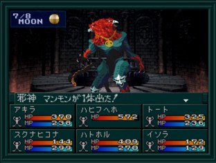
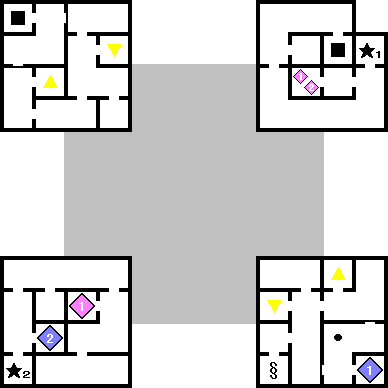
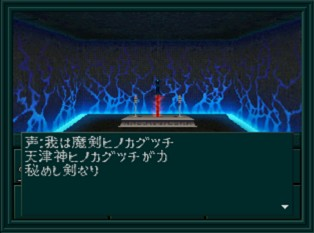

- 시설
- 공략
- 14F
- 15F~17F
- 18F~21F
- 21F~24F
- 24F
- BOSS:사신 만몬
- 19F
시설
- 14F : CB
- 16F 북쪽 : 방어구
- 17F : 사교의 관
- 20F : 회복
- 21F : 도구
- 22F : 무기
- 23F : CB
공략
14F

- ★ : 가디언 매니아
- ● : CB
- S : 세이브
제3 노모스 14층 동쪽에 있는
가디언 매니아는 주인공이 전용 또는 레어 가디언이 빙의되어 있거나, 가디언이 없는 경우 검을 준다.
| 주인공 성별 |
검 |
| 남자 |
ソルブレード |
| 여자 |
ルナブレード |
15F~17F
15F와 16F은 같은 층에 두 구역이 존재한다. 첫 구역은 17F까지 올라가는 장소이고, 반대 구역은 17F에서 내려가야 갈 수 있다.
16F의 북쪽에는 방어구점이 있다. 방어구점 이외에는 별거 없으니 다시 위층으로 올라가자.
17F의 보상 중에 연기의 검(練気の剣)이 있다. 꼭 얻어두자.
18F~21F
여기도 여러 구역으로 나눠져 있다. 우선 21F까지 올라간 후 동쪽에 있는 계단으로 내려가자. 이 길로는 18F까지 내려갈 수 있다. 여기서 백의 열쇠(白のカギ)를 얻을 수 있다.
21F~24F
역시 마찬가지...일단은 24F으로 가자.
24F
남서쪽 계단으로 23F에 갈 수 있다. 23F에는 CB가 있으며 더 아래로 내려가 22F에는 무기점이 있다.
남동쪽 떨어지는 함정으로 가면 19F으로 이동하는데 여기서 워프를 타고 19F 북동쪽으로 이동하면 근처에 밸브가 있는 방이 있다. 밸브를 열고 떨어지는 함정으로 떨어지면 15F 북동쪽에 도착한다. 한층 더 내려가면 14F을 나오게 된다. 14F의 북동쪽에 있는 GEYSER를 타고가면 24F으로 돌아올 수 있다.
다시 돌아와서 북쪽의 대문으로 가자. 18F에서 얻은 백의 열쇠를 사용하면 안으로 들어갈 수 있다.
맵 남쪽에는
BOSS:사신 만몬이 있다. 쓰러뜨리면 안쪽의 게이트가 열리고
제4노모스에 갈 수 있다.
참고로 만몬을 쓰러뜨리면 가디언에 의한 스테이터스 상승이 극단적으로 줄어들게 된다. 따라서 미리 최종 가디언까지 빙의 시킨 후 전투를 하면 좋다.
BOSS:사신 만몬

| 이름 |
Lv58 邪神 マンモン |
| HP |
12000 |
| 마법/특기 |
ザンダイン, デカジャ, ハンマ−パンチ, デストリングス, だいせつざん, じゃしんのきば, デクンダ |
특별히 위협적인 공격은 없다. 타루카쟈와 마카라칸을 사용해주면 쉽게 이길 수 있다. 만일 중마가 사망했으면 네크로마를 사용하자.
쓰러뜨리면 아키라의 모든 능력치가 +2 된다.
19F

- ★1 : 밸브
- ★2 : 히노카구츠치
- ◆ : 워프
19F 에 있는 최강의 검인 히노카구츠치(ヒノカグツチ)는 주인공이나 아키라의 힘과 체력이 각각 25이상의 경우에 입수할 수 있다. 입수 지점으로 가는 방법은 만몬을 쓰러뜨리고 24F 남동쪽의 떨어지는 함정으로 떨어져서 워프존이 있는 장소를 만월 때 진입하여 워프하면 도착할 수 있다.
